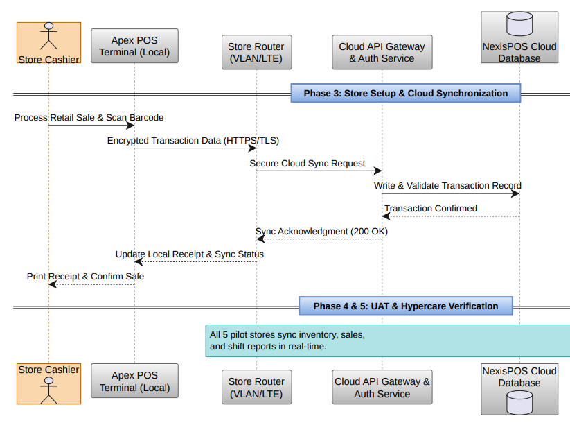

Group 02 – BISY2004 Project Management, Assessment 2
A national retail chain is running outdated point-of-sale systems in five pilot stores. The legacy terminals sync to head office overnight instead of in real time, so inventory figures are a day old, checkout is slow at peak hours, and store managers reconcile takings by hand at the end of every shift. With a major trading period approaching, the chain needed the pilot stores moved onto a cloud platform before the peak, not after it.
To migrate five pilot retail stores from legacy infrastructure to the NexisPOS cloud platform running on Apex POS TouchTerminals, delivering real-time inventory synchronisation and faster checkout inside an approved budget of $106,986 and a fixed deadline of 25 September 2026.
The project used a hybrid life cycle. Governance, procurement and infrastructure work (Phases 1 and 2) were planned predictively, because licensing and hardware delivery are fixed-order dependencies that cannot be iterated. Implementation, testing and training (Phases 3 and 4) ran in short cycles tracked on a Trello board, so a defect found while testing one store could be fixed without re-planning the rest of the schedule.
| Scenario | B – Retail POS Migration (5-store pilot) |
| Approved budget | $106,986 |
| Project window | 30 July 2026 – 25 September 2026 |
| Execution baseline | 28 August – 25 September 2026 (28 days) |
| Life cycle | Hybrid – predictive planning, iterative delivery |
| Project manager | Saimoon Hasan |
| Status | Closed, 25 September 2026 |

The diagram matters to the plan for one reason: the store router sits in the middle of every transaction. If it drops, that store stops syncing, which is why an internet outage is scored as the highest risk on the register and why LTE backup was funded as part of the network budget rather than treated as an optional extra. The same diagram also shows why data integrity checks belong either side of the migration cutover, not just after it.
Each section below presents the artefacts produced in ProjectLibre, Trello, Excel and diagrams.net, with an explanation of what the artefact shows and the decision that followed from it.